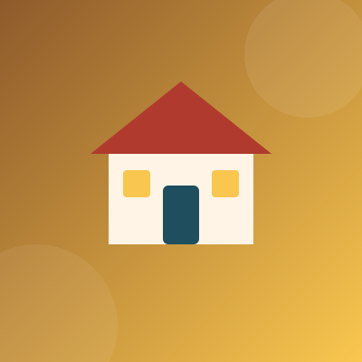

Foundations of foster dignity
Our Programmes
Heart Haven looks after the whole child. Four connected programmes cover learning, food, health and a safe place to call home.
Programme 1
Education & Growth
Every child is enrolled in a certified partner school and supported at home so that learning continues after the school bell.
- Individualized remedial tutoring and homework clubs
- STEAM learning materials and a small reading library
- Exam, uniform and tuition support through sponsored needs
Programme 2
Nutrition & Meals
Balanced meals are planned with a registered nutritionist and cooked from local produce, much of it grown in our kitchen garden.
- Three balanced meals and two snacks daily
- Fortified infant formula and weaning foods
- Organic kitchen garden run with volunteers
Programme 3
Medical Health
Regular check-ups and trauma-informed counselling keep children physically well and emotionally supported.
- Semi-annual dental, vision and general check-ups
- Immunization tracking and deworming cycles
- Play therapy and counselling with on-site staff

Programme 4
Safe Shelter
Small family-style cottages give each child a secure bed, a quiet place to study and a house-mother who knows them well.
- Secure dormitories with warm bedding all year
- Outdoor play greens and reading nooks
- Dedicated house-mothers in every cottage